فيديو عمودي صمّمته وحرّكته بالكامل، يمزج تحريك الواجهات بإيقاع مونتاج الريلز. تايبوغرافي عربي متحرك، وانتقالات بين لوحات بصرية مختلفة، وتصميم صوتي يربط كل حركة بمؤثرها.
صور وأوراق لاصقة وخيوط حمراء تدخل السبورة وحدة ورا الثانية، والكاميرا تتنقّل بينها مع إيقاع التعليق الصوتي.
افتتاحية ليلية بإضاءة نيون، فقاعات محادثة متحركة، ثم شبكة خطوط على تدرّج أخضر وأصفر. كل لوحة بإيقاع حركة مختلف، والانتقال بينها سلس.
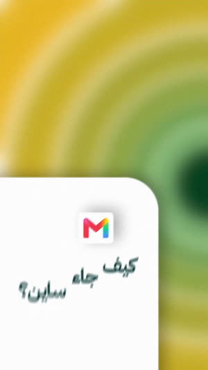
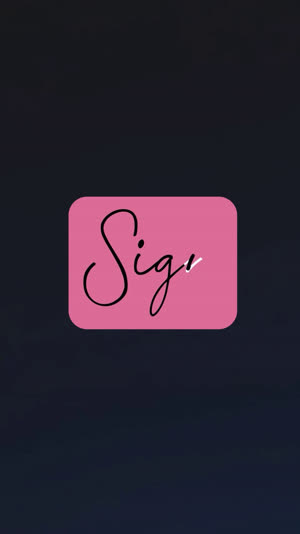
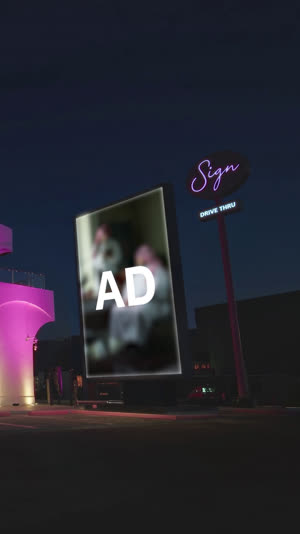
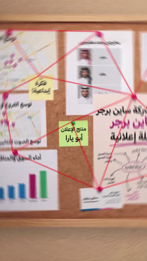
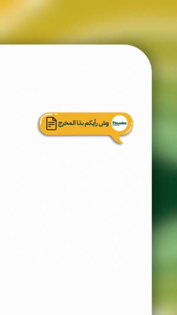
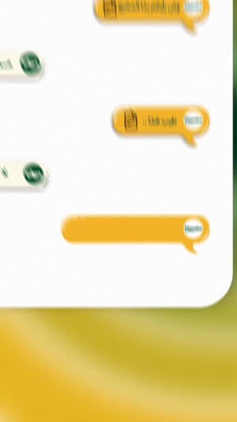
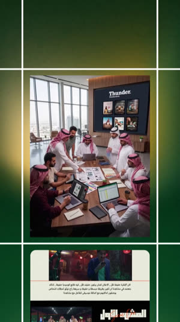
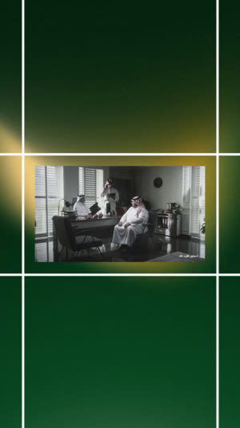
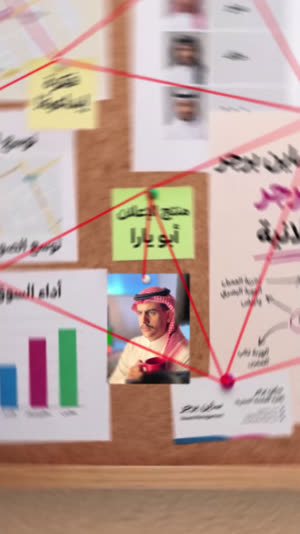
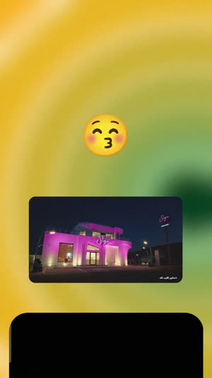
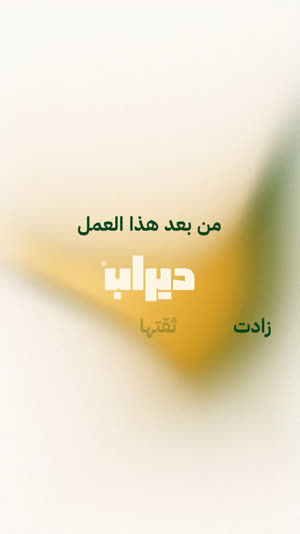
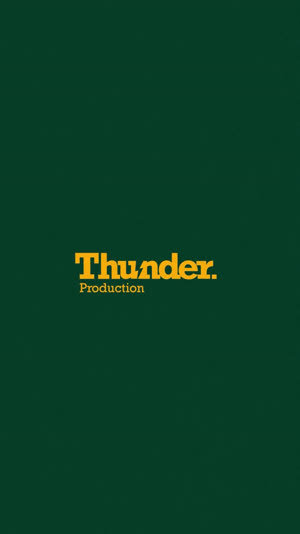
التصميم الصوتي جزء من الحركة: كل دخول وانتقال له مؤثّره.
ديراب ثم شعار Thunder على الأخضر، نهاية تجمع خيوط القصة.